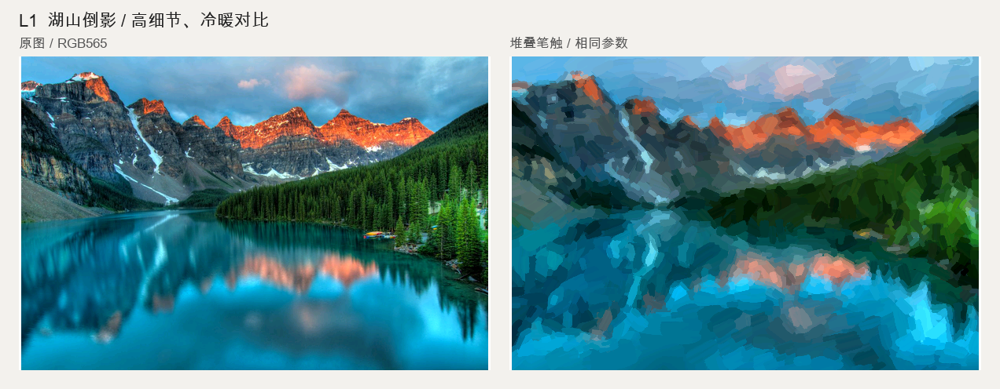
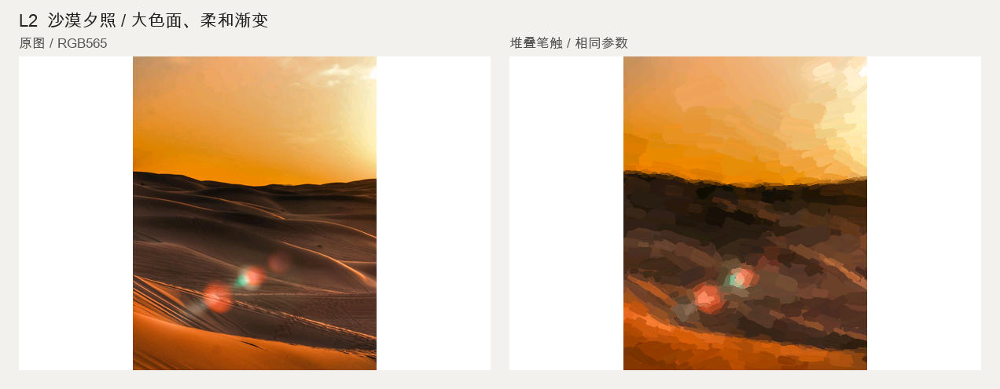
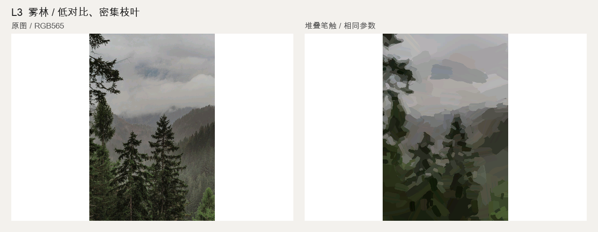
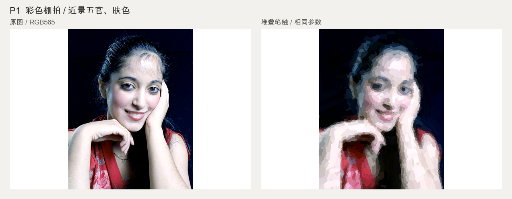
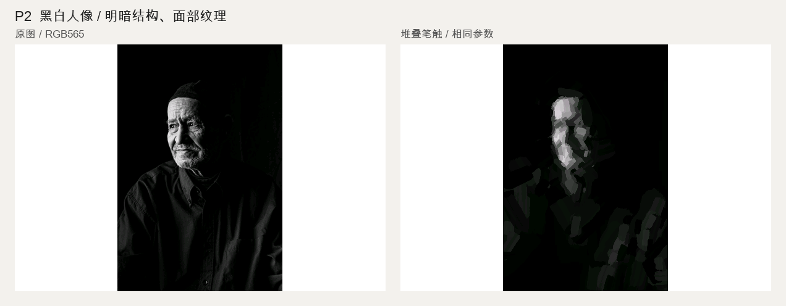
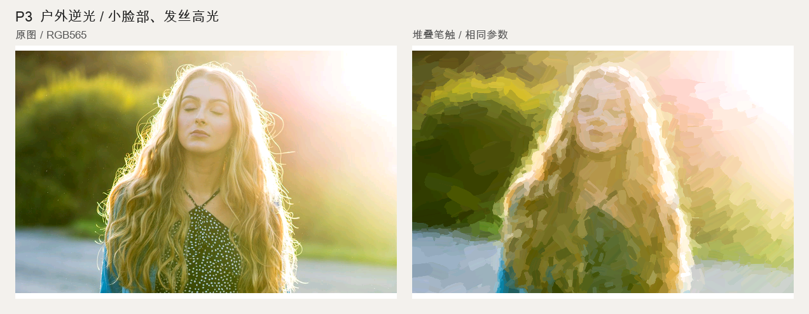
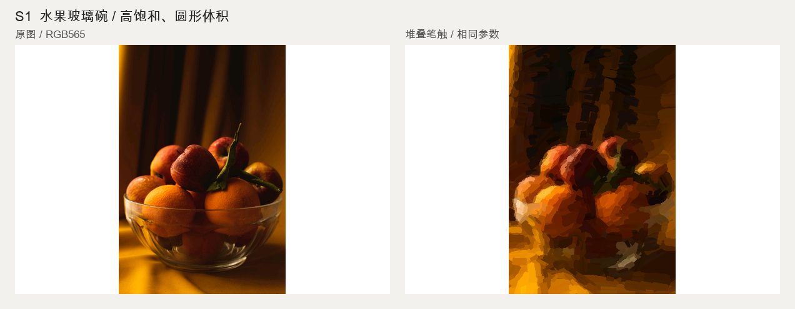
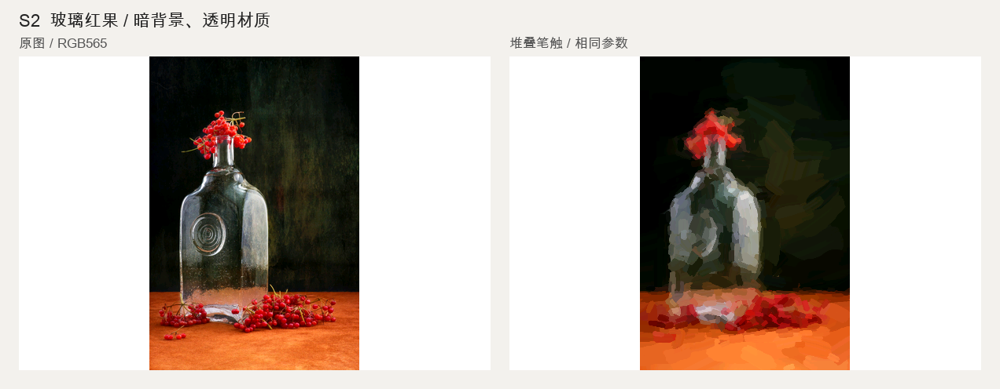
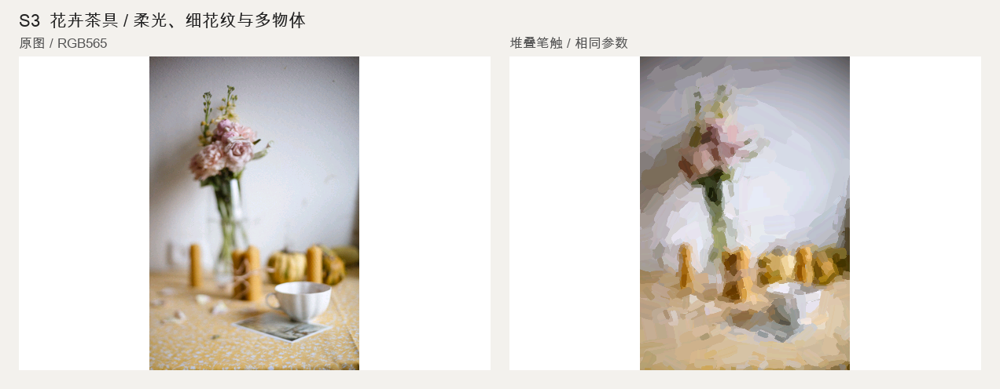

左：RGB565 原图；右：实际 C++ 堆叠笔触原型。完整构图适配 600×400 横屏，仅处理照片区域；未接入六色量化、抖动或固件。竖图因此可用像素更少。运行成功不等于审美或人脸保真通过。

Photo: James Wheeler · content 594×400 · 2238 strokes · ASan/UBSan + deterministic replay passed

Photo: Henrik Le-Botos · content 310×400 · 625 strokes · ASan/UBSan + deterministic replay passed

Photo: Laura Chouette · content 267×400 · 553 strokes · ASan/UBSan + deterministic replay passed

Photo: Harry H Brewster · content 310×400 · 1147 strokes · ASan/UBSan + deterministic replay passed

Photo: MAG Photography · content 267×400 · 219 strokes · ASan/UBSan + deterministic replay passed

Photo: Gilles Scherrer · content 600×383 · 1357 strokes · ASan/UBSan + deterministic replay passed

Photo: Anna Astakhova · content 267×400 · 770 strokes · ASan/UBSan + deterministic replay passed

Photo: Valentin Ivantsov · content 267×400 · 738 strokes · ASan/UBSan + deterministic replay passed

Photo: Мария · content 267×400 · 818 strokes · ASan/UBSan + deterministic replay passed